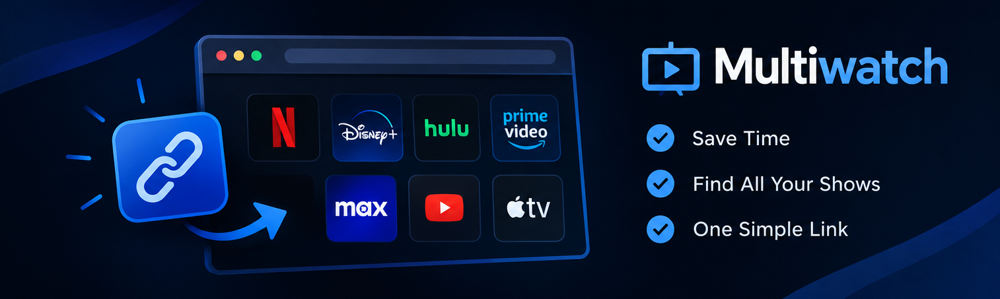

This is where you'll find every show you're currently tracking across all your streaming services, all in one place. The dashboard gives you an easy way to keep track of what you're watching, see which streaming service each show is on, and quickly check your progress. Instead of having to remember what you're watching on different platforms, MultiWatch brings everything together into one organized dashboard, making it easier to keep up with all your shows.

| Show Title | Streaming Service |
|---|---|
| Stranger Things | Netflix |
| The Bear | Hulu |
| House of the Dragon | HBO Max |
Enter a show you are watching, how many episodes you have finished, and how many episodes the show has. MultiWatch will tell you what percent of the show you have completed.
Pick a show and answer the three questions. MultiWatch will decide whether to add the show, keep the current progress, move to the next episode, or mark the show as completed.